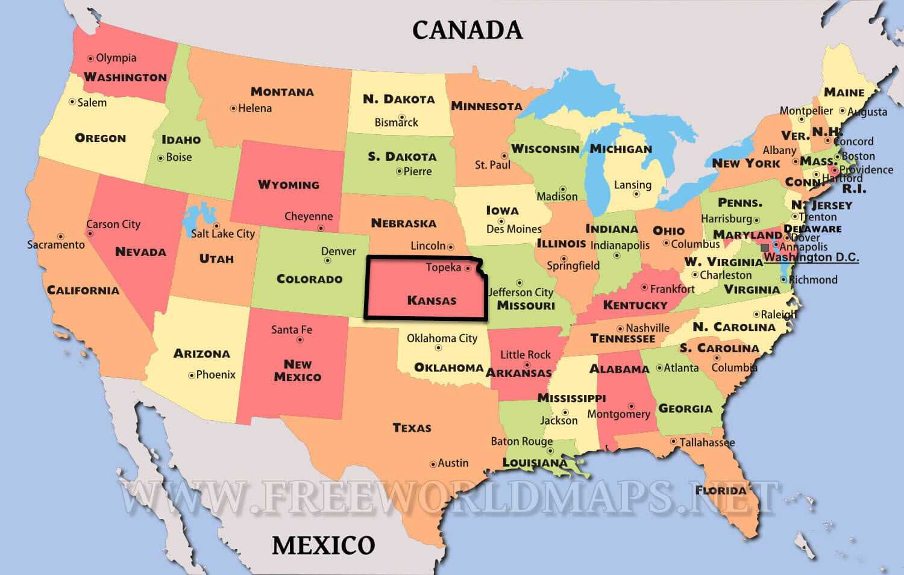

Quick Setup Guide for Self-Registration
George Williams
George Williams
Next Search Catalog Coordinator
Northeast Kansas Library System www.nekls.org
koha-US Past President (2019) www.koha-us.org
These slides available at kohathon2020.hopperdietzel.org/selfreg
USA
Kansas is in the middle.
51 Libraries in north east Kansas

51 Libraries in the highlighted area.
Community Koha since 2011

(Liblime from 2008-2011)
Coronavirus

Like many, we were unprepared.
All Libraries Closed
Kansas Governor Laura Kelly. Statewide stay-at-home order in effect till at least May 3.
Self-Registration Not On

Nobody could get a library card.
ByWater Cheat Sheet
How to set up an online resources only self registration
5 step plan for setting up Self-Registration
Checklist
- Create new patron category
- autoMemberNum turned on
- 7 preferences for Self Registration
- Create reports to identify self-registrations
Create new patron category
- Code: A_SELF | Name: Self registered
- Expires after 90 days
- Age required - any
- Everything else matches all other categories we have
autoMemberNum Turned On
- Changed the setting to "Do" use autoMemberNum
- We did set BorrowerMandatoryField to include cardnumber
This disables the autoMemberNum in the staff client - I used jQuery to kill the warning that pops up in the staff client
$('#pat_memberentrygen span:contains("AutoMemberNum is set to enabled")').hide();
11 Self Registration Preferences
- PatronSelfModificationBorrowerUnwantedField
For patron modification - not necessary for self-registration - PatronSelfRegistration
- PatronSelfRegistrationAdditionalInstructions
- PatronSelfRegistrationBorrowerMandatoryField
- PatronSelfRegistrationBorrowerUnwantedField
- PatronSelfRegistrationDefaultCategory
11 Self Registration Preferences
- PatronSelfRegistrationEmailMustBeUnique
- PatronSelfRegistrationExpireTemporaryAccountsDelay
Also asked ByWater to turn on the misc/cronjobs/cleanup_database.pl - PatronSelfRegistrationLibraryList
Wrote some corresponding jQuery - PatronSelfRegistrationPrefillForm
- PatronSelfRegistrationVerifyByEmail
Customize Verification Email
- OPAC_REG_VERIFY
- Added some instructions
- Added our centralized help e-mail
- Fixed a typo in the verification URL
Create Report
SELECT
Concat('<a href="/cgi-bin/koha/circ/circulation.pl?borrowernumber=',
borrowers.borrowernumber,
'" target="_blank">Link</a>'
) AS DIRECT_LINK,
borrowers.cardnumber,
borrowers.branchcode,
Concat(Coalesce(borrowers.surname, ''), ', ', Coalesce(borrowers.firstname, '')) AS NAME,
borrowers.dateofbirth,
Concat_Ws("<br />",
Coalesce(borrowers.address, ''),
Coalesce(borrowers.address2, ''),
Concat(Coalesce(borrowers.city, ''), ', ', Coalesce(borrowers.state, ''), ' ', Coalesce(borrowers.zipcode, ''))
) AS ADDRESS,
borrowers.email,
borrowers.phone,
borrowers.categorycode,
borrowers.dateenrolled
FROM
borrowers
WHERE
borrowers.categorycode = 'A_SELF'
ORDER BY
borrowers.cardnumber DESC
Demo for Libraries on Zoom
I hid the URL in the OPAC with jQuery
Lots of good questions
People at the demo tested the process with a link I sent them
Followup From Member Library
Policy implications at one library.
Concern over the cost of electronic resources also.
Changes
- PatronSelfRegistrationLibraryList only has an option of NEKLS
- Make all A_SELF accounts expire on July 31, 2020
- PatronSelfRegistrationAdditionalInstructions was changed to remind the patron that NEKLS is their home library
- OPAC_REG_VERIFY updated to remind them that NEKLS is their home library
Mistakes Were made
PatronSelfRegistrationExpireTemporaryAccountsDelay
Since PatronSelfRegistrationExpireTemporaryAccountsDelay says it will remove patrons who have not verified their account after XX number of days, and we had patrons set to self-verify, we turned on this feature.
The problem is that PatronSelfRegistrationExpireTemporaryAccountsDelay deltes all of the patrons in the self-registration category after XX days.
Andrew at ByWater has submitted a patch to make the operation of this system preference more clear and has also submitted a patch to modify the Koha documentation.
How's it working
- 60-70 new accounts
- 20% are duplicates
- Not all of them sign up for Hoopla
- After they register they want to know about Overdrive - which we don't subscribe to
Going Forward
- Turn off autoMemberNum
- Make patrons choose their own library
- Make cards expire after 14 days (patrons must go to the library to complete the sign-up in order to get a card they can use)